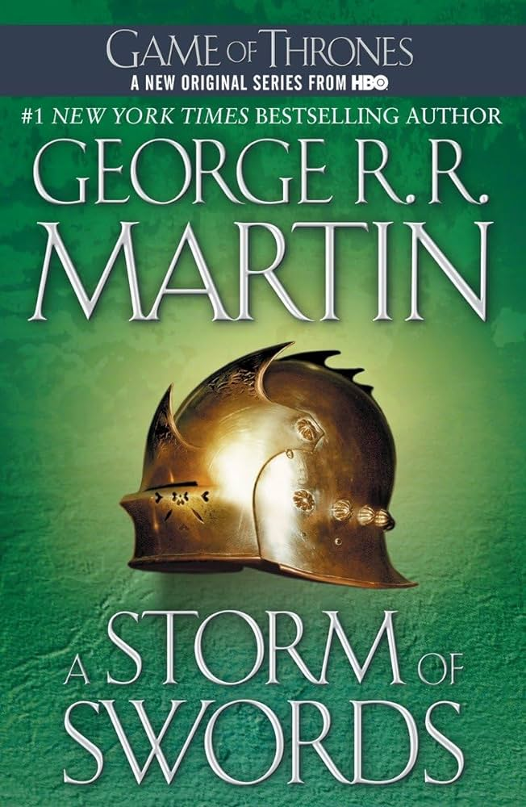
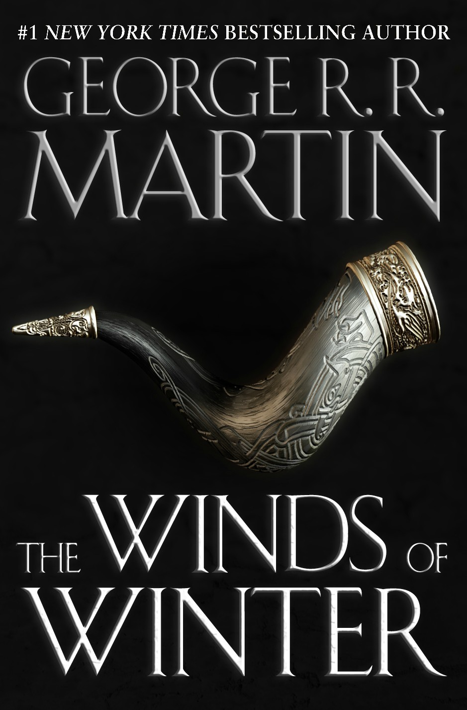

Sequels of a Book
About the Series
Long ago, in a time forgotten, a preternatural event threw the seasons out of balance. In a land where summers can last decades and winters a lifetime, trouble is brewing. The cold is returning, and in the frozen wastes to the north of Winterfell, sinister forces are massing beyond the kingdom’s protective Wall. To the south, the king’s powers are failing—his most trusted adviser dead under mysterious circumstances and his enemies emerging from the shadows of the throne. At the center of the conflict lie the Starks of Winterfell, a family as harsh and unyielding as the frozen land they were born to. Now Lord Eddard Stark is reluctantly summoned to serve as the king’s new Hand, an appointment that threatens to sunder not only his family but the kingdom itself.
Books
Book 1: A Game of Thrones

Winter is coming. Such is the stern motto of House Stark, the northernmost of the fiefdoms that owe allegiance to King Robert Baratheon in far-off King’s Landing. There Eddard Stark of Winterfell rules in Robert’s name. There his family dwells in peace and comfort: his proud wife, Catelyn; his sons Robb, Brandon, and Rickon; his daughters Sansa and Arya; and his bastard son, Jon Snow. Far to the north, behind the towering Wall, lie savage Wildings and worse—unnatural things relegated to myth during the centuries-long summer, but proving all too real and all too deadly in the turning of the season. Yet a more immediate threat lurks to the south, where Jon Arryn, the Hand of the King, has died under mysterious circumstances. Now Robert is riding north to Winterfell, bringing his queen, the lovely but cold Cersei, his son, the cruel, vainglorious Prince Joffrey, and the queen’s brothers Jaime and Tyrion of the powerful and wealthy House Lannister—the first a swordsman without equal, the second a dwarf whose stunted stature belies a brilliant mind. All are heading for Winterfell and a fateful encounter that will change the course of kingdoms. Meanwhile, across the Narrow Sea, Prince Viserys, heir of the fallen House Targaryen, which once ruled all of Westeros, schemes to reclaim the throne with an army of barbarian Dothraki—whose loyalty he will purchase in the only coin left to him: his beautiful yet innocent sister, Daenerys.
Book 2: A Clash of Kings

In this eagerly awaited sequel to A Game of Thrones, George R. R. Martin has created a work of unsurpassed vision, power, and imagination. A Clash of Kings transports us to a world of revelry and revenge, wizardry and warfare unlike any you have ever experienced. A CLASH OF KINGS A comet the color of blood and flame cuts across the sky. And from the ancient citadel of Dragonstone to the forbidding shores of Winterfell, chaos reigns. Six factions struggle for control of a divided land and the Iron Throne of the Seven Kingdoms, preparing to stake their claims through tempest, turmoil, and war. It is a tale in which brother plots against brother and the dead rise to walk in the night. Here a princess masquerades as an orphan boy; a knight of the mind prepares a poison for a treacherous sorceress; and wild men descend from the Mountains of the Moon to ravage the countryside. Against a backdrop of incest and fratricide, alchemy and murder, victory may go to the men and women possessed of the coldest steel...and the coldest hearts. For when kings clash, the whole land trembles.
Book 3: A Storm of Swords
The Seven Kingdoms are divided by revolt and blood feud, and winter approaches like an angry beast. Beyond the Northern borders, wildlings leave their villages to gather in the ice and stone wasteland of the Frostfangs. From there, the renegade Brother Mance Rayder will lead them South towards the Wall. The men of the Night’s Watch are ready for the coming of a great cold and the walking corpses that travel with it. But now they face a horde of wildlings twenty-thousand strong – hungry savage people steeped in the dark magic of the haunted wilderness – poised to invade the Kingdom of the North where Robb Stark wears his new-forged crown. But Robb’s defences are ranged against attack from the South, the land of House Stark’s enemies the Lannisters. His sisters are trapped there, dead or likely yet to die, at the whim of the Lannister boy-king Joffrey or his depraved mother Cersei, regent of the Iron Throne. Cersei’s ambition is unfettered while the dwarf Tyrion Lannister fights for his life, a victim of treachery. And on the other side of the ocean, the last of the Targaryens rears the dragons she hatched from her husband’s funeral pyre. Daenerys Stormborn will return to the land of her birth to avenge the murder of her father, the last Dragon King on the Iron Throne.
Book 4: A Feast for Crows

The Lannisters are in power on the Iron Throne. The war in the Seven Kingdoms has burned itself out, but in its bitter aftermath new conflicts spark to life. The Martells of Dorne and the Starks of Winterfell seek vengeance for their dead. Euron Crow’s Eye, as black a pirate as ever raised a sail, returns from the smoking ruins of Valyria to claim the Iron Isles. From the icy north, where Others threaten the Wall, apprentice Maester Samwell Tarly brings a mysterious babe in arms to the Citadel. As plots, intrigue and battle threaten to engulf Westeros, victory will go to the men and women possessed of the coldest steel and the coldest hearts.
Book 5: A Dance with Dragons

The future of the Seven Kingdoms hangs in the balance. In the east, Daenerys, last scion of House Targaryen, her dragons grown to terrifying maturity, rules as queen of a city built on dust and death, beset by enemies. Now that her whereabouts are known many are seeking Daenerys and her dragons. Among them the dwarf, Tyrion Lannister, who has escaped King’s Landing with a price on his head, wrongfully condemned to death for the murder of his nephew, King Joffrey. But not before killing his hated father, Lord Tywin. To the north lies the great Wall of ice and stone – a structure only as strong as those guarding it. Eddard Stark's bastard son Jon Snow has been elected the 998th Lord Commander of the Night's Watch, but he has enemies both in the Watch and beyond the Wall, where the wildling armies are massing for an assault. On all sides bitter conflicts are reigniting, played out by a grand cast of outlaws and priests, soldiers and skinchangers, nobles and slaves. The tides of destiny will inevitably lead to the greatest dance of all…
Book 6: The Winds of Winter
Daniel Abraham's adaptation of George R. R. Martin's acclaimed epic fantasy A Game of Thrones continues to cast its gripping spell. In the savage north, Jon Snow finds new friends-and enemies-among the brothers of the Night's Watch, sworn to defend Westeros against the horrors that lie beyond the Wall. In the more civilized savagery of King's Landing, Eddard Stark learns from Catelyn of the Lannisters' involvement in the attack on Bran . . . and the murder of Jon Arryn, the previous Hand of the King. While across the Narrow Sea, Daenerys-newly wed to Khal Drogo-learns what it means to be a khaleesi of the Dothraki. A Game of Thrones #1 was everything I could ever want in an adaptation...and more." - Geeks of Doom "The art is wonderful to look at with all the detail contained in each panel, and I'm willing to give this series more of my time. I think fans of the book and television series will enjoy this condensed read." - Major Spoilers "If you are a fan of the novel, this will be a fun graphic adaptation with nice line-work." - Weekly Comic Book Review "With so much excitement to come in the series, now is a perfect time to pick up A Game of Thrones." - Broken Frontier